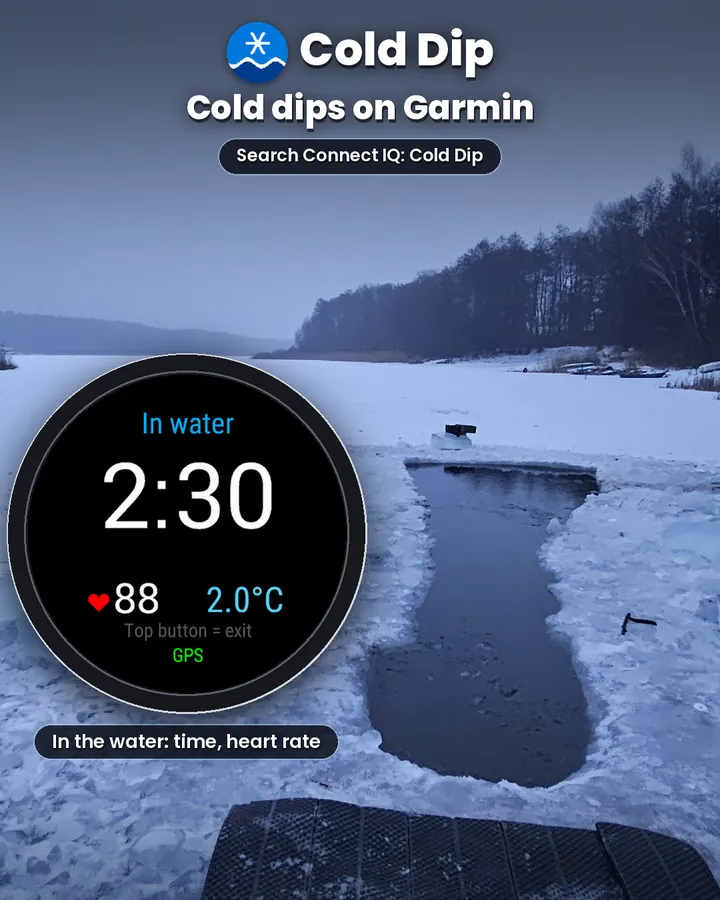

Before / in the water / after
The top button switches stages. Time in the water just keeps counting — the app never tells you to get out. That’s your call. Your last time is only a reference point, not a target to beat.
Cold water dips and ice swimming, recorded properly — not as a swim.
Or search “Cold Dip” in the Connect IQ app on your phone.



Built for a dip, not a pool session. You stay in control the whole time.
The top button switches stages. Time in the water just keeps counting — the app never tells you to get out. That’s your call. Your last time is only a reference point, not a target to beat.
Heart rate is recorded throughout. Water temperature is entered manually and saved with the activity.
Air temperature, feels-like and wind — taken from Garmin weather on your phone.
The spot of your dip is saved and shown on a map in Garmin Connect.
After each dip, a quick rating of how you feel. Also heart-rate peak and recovery, plus Body Battery and stress before you entered.
Everything is saved in Garmin Connect as its own activity, not as a swim.
English, Polish, German, Czech, Slovak, Finnish, Norwegian, Swedish, Spanish, Russian and Ukrainian. The app follows your watch language automatically.
Forerunner, Fenix, Epix, Enduro, Venu, Vivoactive, Instinct 2 / 3 / E / Crossover and more. Not supported: very old watches such as the Forerunner 920XT (Connect IQ 1.x).
Search for your model. The list matches the 133 watches in Cold Dip 1.0.3.
Very old Connect IQ 1.x watches, such as the Forerunner 920XT, cannot be supported.
How Cold Dip looks on different Garmin screens.


Recent versions of Cold Dip.
133 watches, including Instinct 2, Instinct 2S, Instinct 2X, Instinct 3 Solar, Instinct E and Instinct Crossover, plus a new black-and-white layout for MIP screens.
126 watches, including the Forerunner 55.
105 watches, including rectangular layouts for Venu X1 and Venu Sq 2.
First release.
“Działa idealnie” (Works perfectly)
A dip of over 10 minutes at 5°C — water temperature on the watch, and all the data saved in Garmin Connect.
A few things people often ask after installing.
Install it from the Connect IQ Store app on your phone — not from Google Play or the App Store. On the watch, you’ll find Cold Dip in the activities / apps list.
In the “Ice hole” profile, use the − / + buttons on the start screen. In other profiles, set it from the menu: “Manual water temp.” If you see “--°C” in the water, the temperature hasn’t been set yet.
Open the activity, go to the Stats tab and scroll down to the “Connect IQ” section. Heart rate, water temperature, weather, how you felt and the stage times are all there. The tiles on the Overview screen are set by Garmin — the app can’t change them.
No. The watch cannot measure body temperature. The sensor reads the temperature of the watch itself, which is affected by your skin and the air. Water temperature in Cold Dip is entered manually.
Calories are estimated by the watch from heart rate, not calculated by Cold Dip.
Cold water is serious. These are general safety reminders, not medical advice. You decide when to get in and when to get out.
Always go with someone who can help if you get into trouble, or make sure someone on shore is watching you.
If you are new to cold water, ease into it over time rather than starting with a long dip in very cold water.
Many people start with only a short time in the water and build up slowly. There is no time you “should” stay in.
Leave the water as soon as you feel you should — heavy shivering, pain, numbness, confusion, or simply a sense that it is enough. Cold Dip never tells you to get out, and it never sets a target time to beat. Your last time is only a reference.
Get dry and warm as soon as you can after leaving the water. Have warm clothes ready before you go in.
After you get out, your core temperature can keep falling for a while as colder blood returns from the skin and limbs. This is often called afterdrop. Keep warming up, take it slowly, and wait until you feel well before you drive or cycle.
Cold Dip is a recording app, not a medical device, and it does not give medical advice. It cannot tell you whether it is safe for you to enter cold water. If you have a health condition, are pregnant, or are unsure, speak to a qualified professional first.
A short look at one dip, from the start screen to the save in Garmin Connect.
Have an idea for a Garmin app or watch face? Let’s build it together. Write to me and tell me which watch you use.
If you already use Cold Dip, a review in Connect IQ helps a lot — thank you!
Cold Dip is free. If it helps your dips, you can support the work behind it.
Buy me a coffee